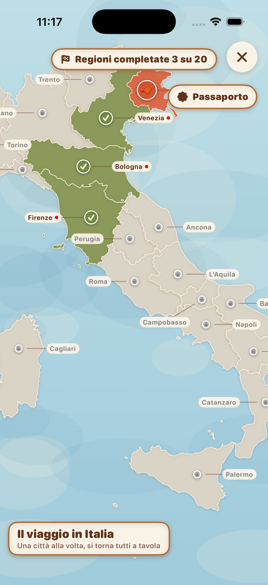

Come nasce e come cresce Tavolata, versione dopo versione. Scritto da chi lo sviluppa, in Italia.

Prossime tappe: Aosta, Torino e Android
Dopo Milano il viaggio continua verso la Valle d'Aosta e il Piemonte. Le prossime città sono Aosta e Torino: livelli, ricette e luoghi da restaurare sono già in preparazione.
Nello stesso periodo Tavolata arriverà anche su Android, dove oggi è in fase di test.
In preparazione ci sono anche due piccole novità: un paesaggio notturno per la schermata iniziale e notifiche più discrete, al massimo una al giorno e mai di notte.
Milano, la prima città a quartieri
Con la versione 1.0.9 arriva Milano, la sesta città del viaggio. È la prima divisa in quartieri: Duomo, Brera, Navigli, Castello e Porta Nuova, con 100 livelli nuovi e 10 luoghi da restaurare.
In tavola arrivano i piatti milanesi: risotto alla milanese, cotoletta, ossobuco con la gremolada, cassoeula, minestrone alla milanese e mondeghili.
Da Milano si cucina sul serio: gli errori consentiti in ogni livello sono pochi e compaiono tessere «incartate», che si aprono solo quando una comanda le chiede.
Cambia anche il Passaporto: raccoglie i timbri di ogni città (arrivo, quartieri, luoghi restaurati) e porta a sette gradi da viaggiatore.
Feste più impegnative e la Tavolata di Natale
Giocando il Mercatino di Natale di Trento ci siamo accorti che era troppo facile. Con la versione 1.0.8 tutte le Feste e le porticine del Calendario dell'Avvento sono più impegnative.
Le vittorie delle Feste danno ora le tegole di Natale, con cui si restaura, un pezzo a settimana, «La Tavolata di Natale».
Le abitudini di «A tavola in Italia» passano da 12 a 60, e da dicembre arriva la Missione del mese.
Un Natale lungo, dall'Avvento alla Befana
La versione 1.0.7 porta le Feste: il Mercatino di Natale di Trento e poi una Festa nuova ogni settimana fino al 6 gennaio, con le ricette della tradizione, fino alla Befana.
Dal 1° al 24 dicembre c'è anche il Calendario dell'Avvento, con una porticina da aprire ogni giorno.
Nei giorni prima erano arrivati lo chef che accoglie il giocatore all'apertura, con frasi diverse per ogni città, e le cartoline delle città da condividere.
Perché Tavolata
Tavolata nasce da un'idea semplice: un puzzle rilassante che lasci anche qualcosa. Una ricetta vera da cucinare, un luogo da scoprire, una parola della cucina italiana.
In ogni livello si abbinano gli ingredienti per completare le comande: pane, pomodoro e olio fanno una bruschetta. Vincendo si guadagnano le tegole per restaurare i luoghi delle città.
L'11 novembre 2026 Tavolata è uscita su App Store. Il viaggio parte da Firenze e arriverà, una città dopo l'altra, in tutte le 20 regioni d'Italia.